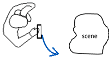

Instant Tracking
Learn
- Instant 2D and 3D (SLAM) tracking techniques
- Rectify a camera image so that an object is displayed correctly on a flat surface
For instant 3D tracking it is recommend to move around the scene like the picture below to create a map:

Key methods
- startInstantTracking()
- onInstantTrackingEvent()
Explanations
Please read the full article explaining this tutorial: